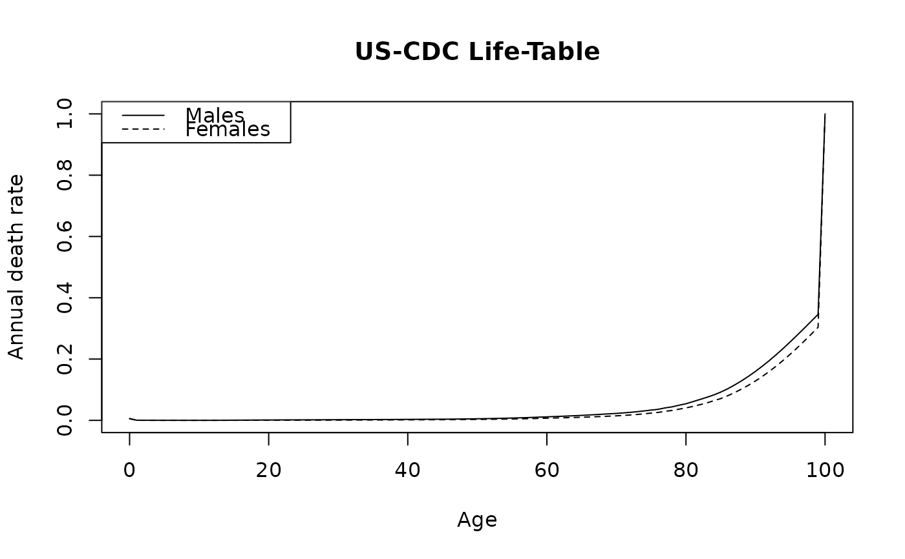

Annual death rates by single year of age (0–100) and sex from the US
Centers for Disease Control and Prevention (CDC) National Center for Health
Statistics, aligned to the SEER-17 study period (cases diagnosed before
2021). Used by make_background_surv and
run_tumour_analysis to normalise relative (disease-specific)
survival estimates to net (all-cause) survival.
Format
A data frame with 101 rows and 3 columns:
AgeInteger age (0, 1, 2, …, 100).
MalesAnnual probability of death for males at this age.
FemalesAnnual probability of death for females at this age.
Source
US CDC/NCHS National Vital Statistics Reports, underlying cause-of-death life-tables (https://www.cdc.gov/nchs/nvss/life-tables.htm).
Details
A sex-mixed rate for a cohort with proportion male \(\pi\) is constructed
as:
$$q_{\text{mix}} = \pi \cdot q_{\text{males}} + (1 - \pi) \cdot q_{\text{females}}.$$
This is done inside run_tumour_analysis for each
recurrence-type subgroup.
Examples
data(lifetable_seer)
head(lifetable_seer)
#> Age Males Females
#> 1 0 0.006023 0.005132
#> 2 1 0.000481 0.000394
#> 3 2 0.000332 0.000232
#> 4 3 0.000237 0.000187
#> 5 4 0.000179 0.000142
#> 6 5 0.000165 0.000133
plot(lifetable_seer$Age, lifetable_seer$Males, type = "l",
xlab = "Age", ylab = "Annual death rate", main = "US-CDC Life-Table")
lines(lifetable_seer$Age, lifetable_seer$Females, lty = 2)
legend("topleft", c("Males", "Females"), lty = 1:2)
